MR-Resistant Cardiac Catheterisation Robot
Third Year Individual Project - UCL Mechanical Engineering
Overview
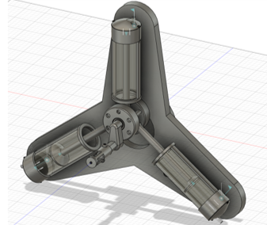- Designing and modelling a robot that can perform the cardiac catheterisation medical procedure, by steering a balloon catheter, that is magnetic resonance (MR) resistant.
- The robot thus cannot expose any ferromagnetic materials (metals, electronics, etc.) to the strong magnetic fields present within the MR zone (allowing physicians to perform cardiac catheterisation with concurrent access to live MRI scanning).
- Objectives for the catheterisation robot included:
- Applying atleast 100mm of linear actuation to the catheter
- Applying continuous bi-directional rotary actuation to the catheter
- Minimising friction, pressure leaks and other losses, ensuring reliable and accurate steering of the catheter
- Designing an ergonomic and easy to use system for the physician to operate the catheter - A year long design project individual project delivering a novel design and 3D model, dissertation and final presentation.
Methodology
- A master/slave model was conceptualised for the robot's actuation, where pistons in the master-side are connected to pistons in the slave-side via plastic tubing acting as the fluid pipeline.
- This allows a master-side piston to be electronically actuated outside the MR zone, resulting in a pressure change within the pipeline which consequently actuates the slave-side piston within the MR zone.
- A literature review was conducted into potential MR-resistant rotary actuation mechanisms that could provide the required continuous rotation, as this was a major design challenge of this project. Four distinct actuators were considered, seen below:
- Following a KPI comparison between the actuators, the radial piston motor was selected as the rotary actuation system, given its potential of providing continuous rotation whilst operating reliably and without excessive friction. Its operation can be seen below.
- A pneumatic radial piston motor was conceptualised and mathematically modelled, seen below. It incorporated only three cylinders to minimise losses and potential alignment issues, and a corresponding triangular frame to anchor these cylinders. The cylinder rods would connect to a revolving plate which rotates a crankshaft: the output of which the catheter is affixed to.
- A Luer Lock medical syringe was selected for use as the cylinders due to leak-resistance - and modelled according to specification.
- A bracket was designed for the syringe, comprising a cap which anchors to the frame, side panels and a circular base: being joined by acrylic screws (as opposed to metal). The custom polyisoprene plunger comprises a hole to connect to the revolving plate.
- The frame (above) incorporates three outer through-holes with press-fitted ceramic bearings to anchor the cylinders, and a central through-hole to anchor the crankshaft: which rotates within the recessed plate. The two lower through-holes accommodate press-fitted slide bearings for linear translation along acrylic rods, and the two threaded holes in the back plate screw to linear actuator.
- The revolving plate incorporates two sections connected by fixed rods, along with three joints on which the cylinder plungers anchor. The central through-holes accommodate press-fitted bearings for the crankshaft to pass through.
- The crankshaft anchors to the frame at the rear, and passes through the revolving plate. At the front, it comprises a screw-on sleeve with hollowed sections to insert the catheter: which goes through the tip of the sleeve cap and is secured by an O-ring.
- The assembled rotary actuator hence provides continuous bidirectional rotation, determined by the extensions of the cylinders.
- The linear actuator comprises an enclosure constructed from 5mm thickness acrylic sheets, joined by ceramic screws. A cylinder secured to the enclosure via bracket screws into the rear of the rotary actuator, translating it along the 7mm diameter acrylic rods. Thus, the fully assembled slave-side is seen on the right.
- On the master-side, the actuation is electronically performed using a 40mm NEMA stepper motor, seen below on the left.
- The master-side actuator (right) consists of a series of 2mm thick acrylic sheets connected by three M5 threaded bars, the central bar being joined to the stepper motor via an M5 jaw shaft coupler. The cylinder is secured between the sheets at its plunger and flange. Actuation of the stepper motor will hence actuate the cylinder, which is connected to the slave-side via pipeline.
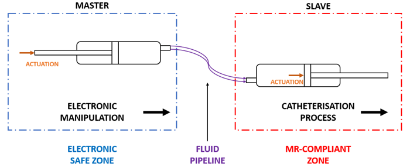
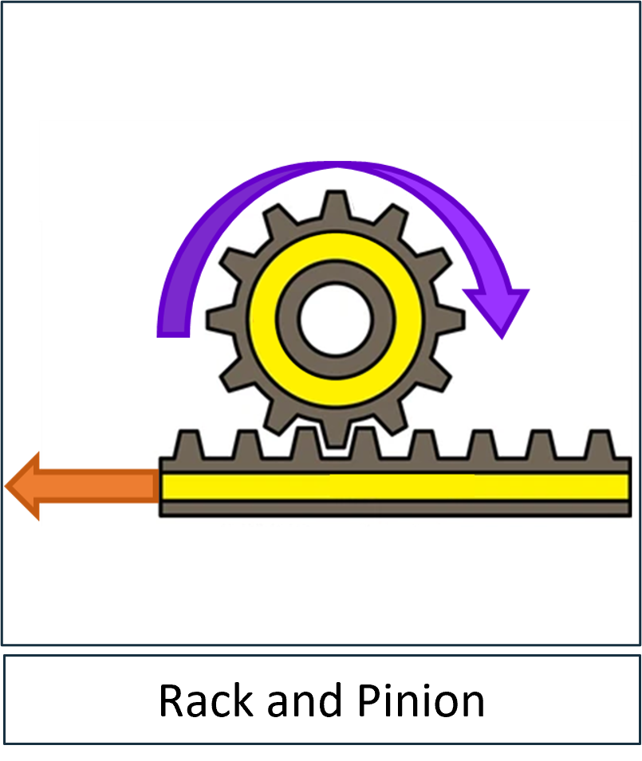
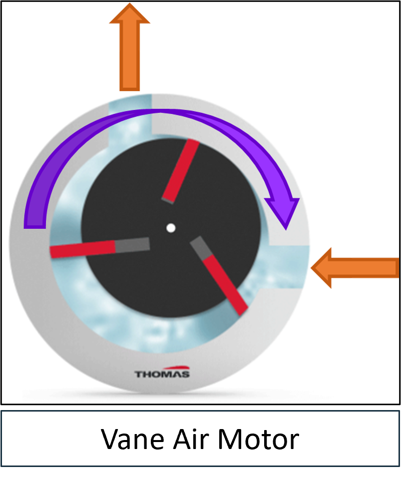
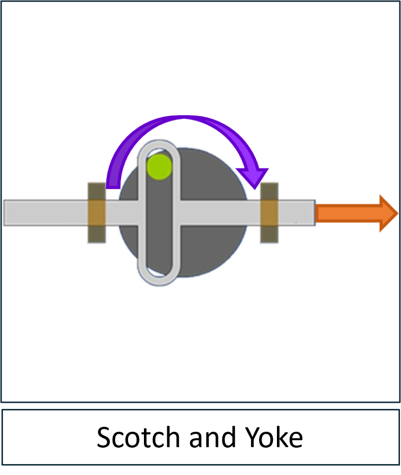
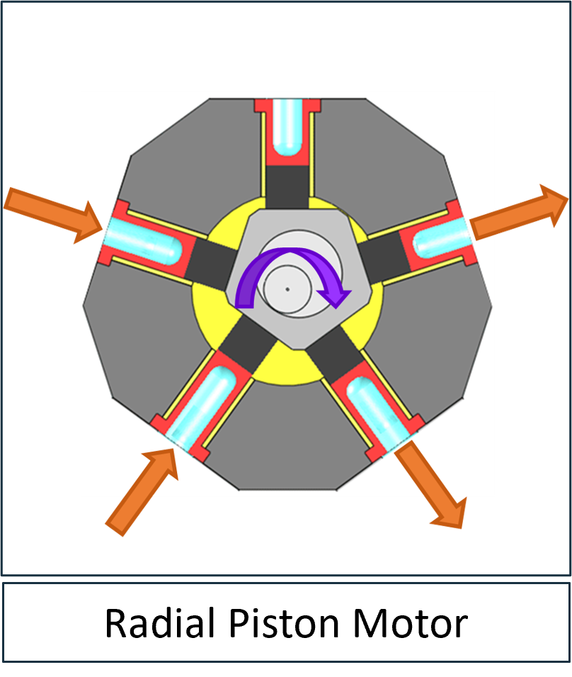
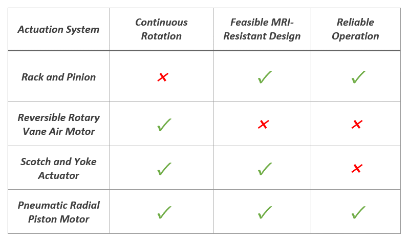
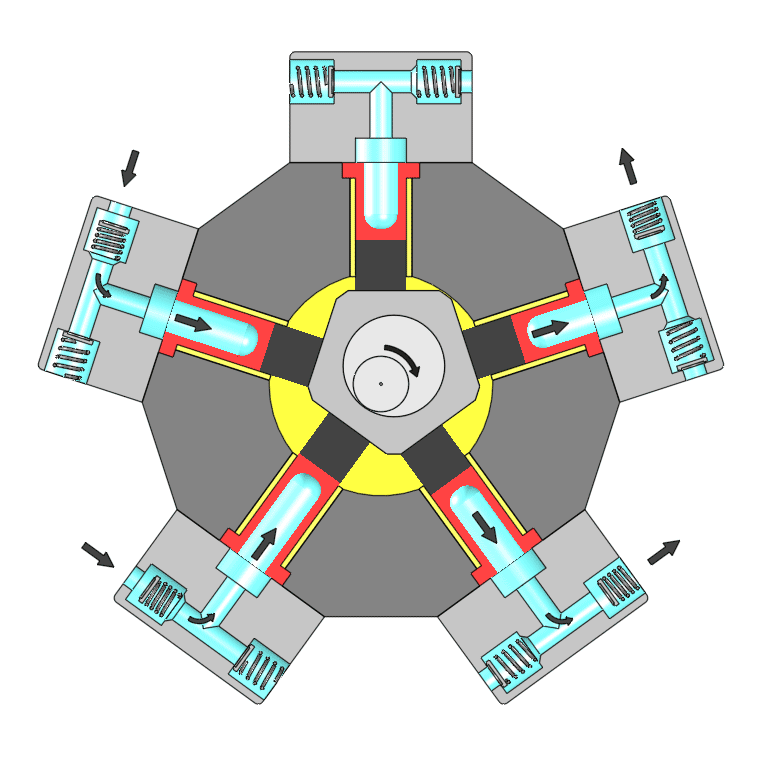
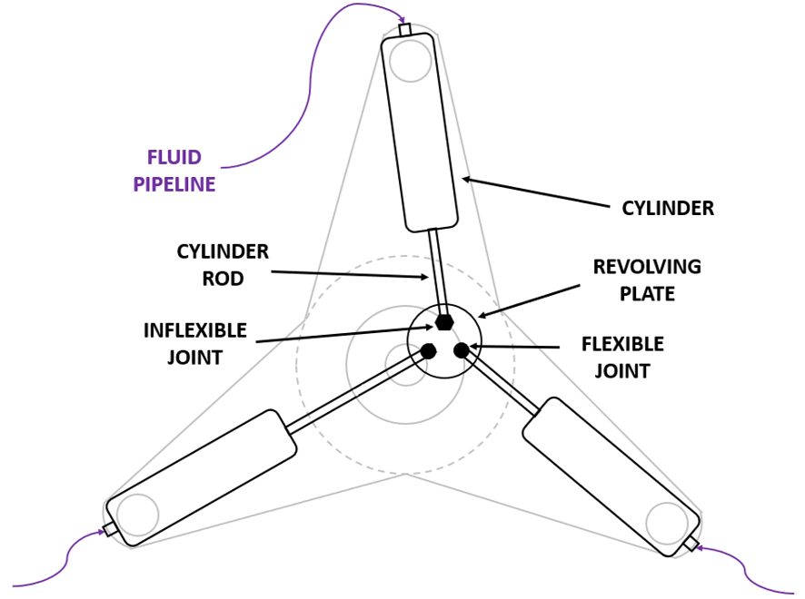
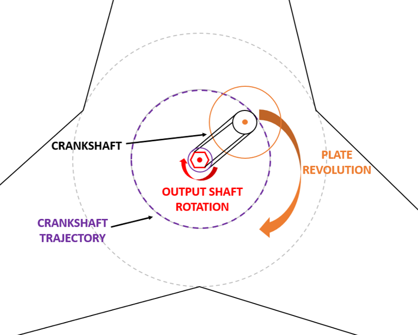
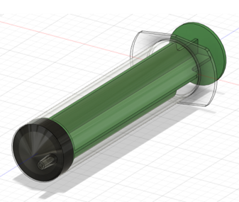
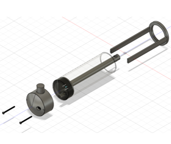
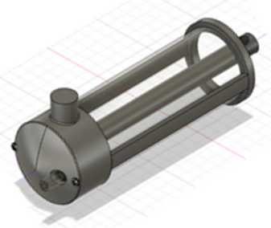
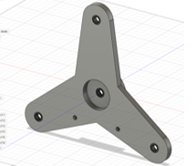
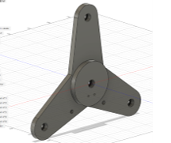
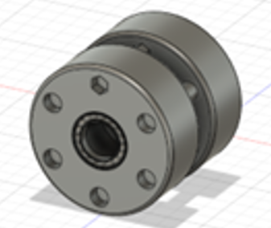
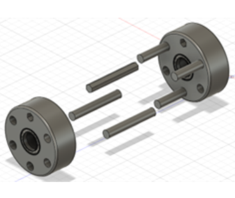
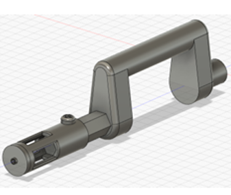
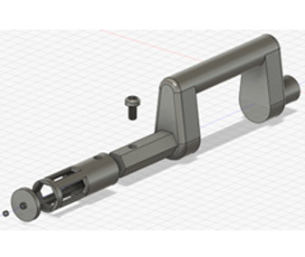
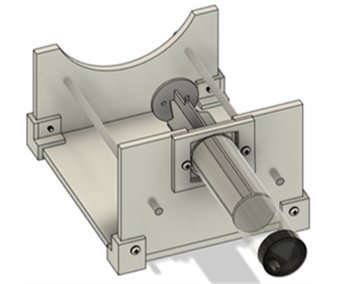
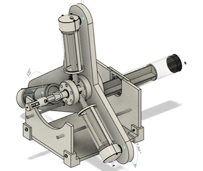
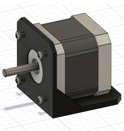
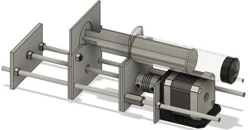
Results
- Thus, the final design is a ready-to-build MR-Resistant cardiac catheterisation robot which provides 127.5mm of linear actuation, and continuous bi-directional rotary actuation to the balloon catheter, as required.
- The four master-side actuators, which are electronically controlled, remain outside of the MR zone, with three of them controlling the rotary actuator and one controlling the linear actuator, through the pipelines.
- The cylinder profiles were geometrically derived, given the finalised cylinder, revolving plate and crankshaft dimensions. The setup was constructed and programmed in tinkercad, and the cylinder actuation profiles were calculated and mapped.
- The bill of materials shows a total cost for the catheterisation robot of £296.27, including the ABS and polyisoprene filaments, where most of the cost comes from the stepper motors, ceramic and slide bearings.
- The project received very high marks in the final presentation (80+), having impressed the panel greatly for the engineering concepts applied.
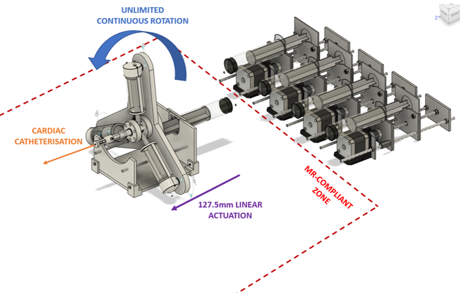
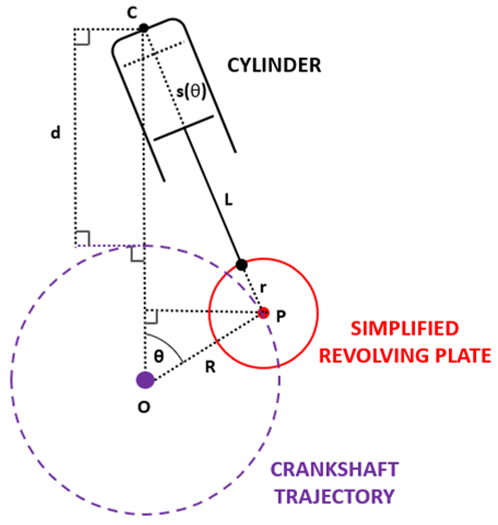
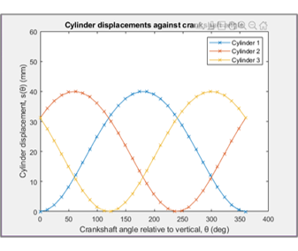
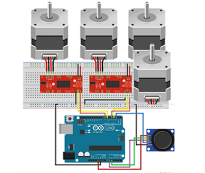
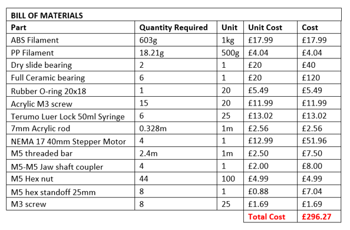